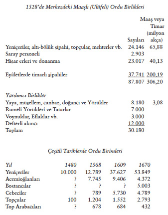

Klasik Dönemden XVII. Yüzyıla Osmanlı Askerî Kuvvetleri
Klasik Çağ’da Ordu
1527–1528’de, Osmanlı merkez hazinesi yaklaşık beş milyon altına varmakta idi. Ayrıca eyâletlerde timarlılara tahsis edilen gelir kaynakları 2 milyon altın civarında hesaplanmış idi. Osmanlı kara ve deniz kuvvetlerine ayrılan para yaklaşık 320 milyon akça veya 5,4 milyon Venedik altınına varmakta idi. Tüm devlet gelirleri, 9,7 milyon altın hesaplanmakta idi.159 Demek ki, devlet bütçesinin yarıdan fazlası askerî kuvvetlere harcanmaktadır (Aynı tarihlerde, Fransa bütçesi 5 milyon altın hesaplanmıştır). Donanma, timarlıların getirdikleri yardımcıları, cebeliler ve halktan ücretle toplanan azebler ile tüm ordu mevcudu o devir için yaklaşık 150.000’e varmakta idi.
XVII. yüzyıl ortalarında geri hizmetlerde, korucu, emekli ve kale muhafazasında bulunan yeniçeriler çıkarılırsa, sefere giden yeniçeri sayısı 21.428 nefer olarak tespit edilmiştir. Tüm yeniçeriler, 54.222 nefer olup mevâcibi (yevmiyeleri) yılda 148.477.020 akçadır. Bundan başka giyimleri için verilen kumaş bedeli 9.300.000, et masrafı 9.304.130, celebkeşlere verilen 5.503.000 ve dağıtımı ile 15.000.000 akça sair giderler de eklenirse, yeniçeri ocağı için yıllık gider yılda yuvarlak hesap 191 milyon akçaya varır –saltanat değişikliklerindeki culûs bahşişi bu hesapta yoktur. Bu tarihlerde 60 akça 1 altın kabul edilirse, yekûn 37.000 altın eder ki tüm bütçenin üçte birinden fazladır.

159 H. İnalcık vd, An Economic and Social History of the Ottoman Empire, 1300-1914, Cambridge, 1994.